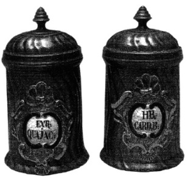

ŞEKİL 68. Kurşun-kalay alaşımlı ecza kutuları (18. yüzyıl): Kutulardan birincisinde EXTR(ACTUM) QUAJAC(I), ikincisinde ise H(ER)B(A)CARD(UI) B(ENEDICTI) yazıları yer almakta olup birincisi guayak (peygamber ağacı) odunu özütünü, ikincisi ise kutsal devedikeni özütünü içermektedir (Alman Eczacılık Müzesi, Heidelberg).47
ECZANE TERAZİSİ VE TARTILAR
Terazinin en eski biçimi, iki kollu terazi olup İÖ 5000’lerde Mısır’da geliştirilmiştir. Buna ilişkin olarak günümüze kadar korunarak gelmiş olan Eski Mısır mezar resimleri ve taş tartılar bulunmaktadır. Mezarlarda bulunan ve değerli metalleri tartmak için kullanılan terazilerden kimilerinin, 2 m kadar yükseklikte olduğu ve duyarlığının çok az olduğu kaydedilmiştir. Kefe olarak ilkin bez ya da deri, daha sonraları ise ahşap ve metal levha kullanılmıştır. Roma çağında iki kollu terazinin yanı sıra başka bir terazi tipi olarak eşitsiz kollu terazi ya da kantar da kullanılmıştır.
Yeniçağ başlarında Vannoccio Biringuccio (1480-1538), Lazarus Ercker (~1530-1594) ve Georgius Agricola (1494-1555) tarafından yürütülen metalürjik denemelerde, standart alet olarak analitik teraziler kullanılmıştır. 16. ve 17. yüzyıllarda eczanelerde ilaç ve ecza tartımı için tercihen el kantarı kullanılmıştır. Geç dönemlerde ise oturaklı ve bir ahşap mahfaza içine yerleştirilmiş teraziler kullanılmaya başlanmıştır. Mahfaza, ölçüm olayında rüzgâr, toz ve nemin olumsuz etkisini dışladığından, ölçüm kesinliğinin artmasını sağlamıştır.
Terazinin yanı sıra eczacılar için tartılar (ağırlıklar) da önem taşımaktaydı. İlk başlarda doğal ölçüler kullanıldı. İS 670’lerde Yunanistan’da ilk ağırlık birimleri (talent, mine, drachma, obolos, halbobolos, chalkus) kullanıldı. Roma İmparatorluğu ağırlık ölçüsü olarak, pfund’u (pound ya da libra = 327,45 g) tanıdı. Çeşitli ağırlık birimlerinin karşılıklı ilişkisi şöyleydi: 1 libra = 12 uncia; 1 uncia = 8 drachma; 1 drachma = 3 scripulum = 2 obolus; 1 scripulum = 10 grain. Sikke bağlamında Roma pfund’u (pondus aurarium et argentum), Yeniçağ başlarına dek İtalya’da ağırlık temeli olarak geçerli kaldı. Almanya’da Nürnberg’li tunç dökümcüler, kesinleştirilmiş ve standartlaştırılmış ağırlık sisteminin gereği olan standart ağırlıklar döktüler. Bunlar tunçtan, iç içe geçebilecek kesik koni biçiminde hazırlanmıştır. Örneğin Nürnberg eczacılık tartısında, en küçük eczacı tartısı olarak bir arpa, buğday ya da karabiber tanesine karşılık gelen ve Latince karşılığı “granum” (“tahıl tanesi”) olan 1 grain 0,062 gram’a, 1 drachma (= 1/ 100 mina) 3,73 gram’a ve 1 uncia ise 29,8 gram’a karşılık geliyordu.
Terazi tekniğinde önemli bir gelişme, 18. yüzyıl sonlarında Jesse Ramsden (1731-1800) tarafından gerçekleştirilen, agat yataklarla birleştirilmiş çelik kama ağızlarıdır. Bu ek sistem, İsveç’te kimyacı Jöns Gottlieb Gahn (1743-1818) tarafından kullanılmış ve ilk kez 1818’de Jöns Jacob Berzelius’un (1779-1848) kimya ders kitabında tanımlanmıştır.
Mısır terazileri ve ağırlıklarıyla, bir kütleyi yaklaşık 2 grains’lik (= 130 mg’lık) doğrulukla ölçmek olasıydı. 18. yüzyılla birlikte, tartma doğruluğu birkaç miligrama geliştirildi. Örneğin, terazilerin gelişimine ve nicel analitik kimyaya katkıları olan Joseph Black (1728-1799), yalnızca 1 grain’e (= 65 mg) yakın duyarlıkta analitik veriler yayınlamıştır. Bununla birlikte, bu yüzyılın sonunda, terazilerle oldukça doğru ölçümler yapılabiliyordu. Ünlü kimyacı Antoine-Laurent Lavoisier (1743-1794), kütlenin korunumu yasasını bulmasını, teraziyi yaygın olarak kullanmasına borçludur. Lavoisier’nin kullanımı için ünlü terazi yapımcısı Jean Nicolas Fortin (1750-1831) tarafından yapılan terazi, maksimum 600 g tartarken 5 mg’lık bir duyarlığa sahipti. 19. yüzyılın ilk yarısına tarihlenen Justus von Liebig’in (1803-1873) terazileri, Giessen’deki “Liebig Müzesi”nde sergilenmektedir. Liebig’in özel laboratuvarındaki “Braunstein” terazisi, Lavoisier’nin terazisiyle aynı tartma kapasitesine sahip olup duyarlılığı 3-5 mg’dır. Küçük teraziler doğal olarak daha duyarlıdırlar ve 1 mg’ın altındaki kütle farklarını bile ayırt edebilirler.
DAMITMA DÜZENEKLERİ
Damıtmaya ilişkin ilk değinmelerden birine, Romalı yazar Yaşlı Plinius’ta rastlanır. Naturalis historia adlı yapıtında, ilkel biçimdeki bir damıtma yardımıyla sedir ağacı odunundan uçucu (eterik) yağ elde edilmesini betimlemiştir.
Antikçağın yüksek kültürleri olan Yunanlılar ve Romalılar, daha eski kültürlerin simya bilgilerini ve özütleme (ekstraksiyon) gibi kimya teknik ve yöntemlerini devraldılarsa da bunlara kayda değer bir gelişme katmadılar. Bu arada damıtma (destilasyon) yöntemi ilk kez İS 100-200 yıllarında İskenderiyeli simyacılar tarafından bulunmuştur. Bunda türdeş (homojen) bir evre (faz) şeklindeki sıvı karışım, etkin bir biçimde uçucu ve az uçucu bileşenlerine ayrılmakta, böylelikle alkol temelinde parfüm üretimi hızlı ve basit bir şekilde mümkün olmaktaydı (ŞEKİL 69).